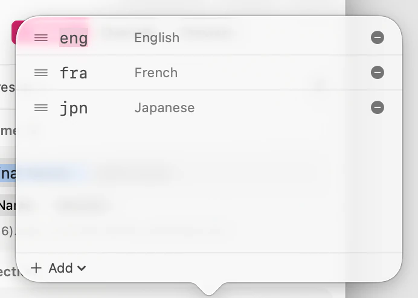

Las reglas de conservación son el núcleo de SubTrack. Se aplican a la vez a todos los archivos de la cola, así que describes una sola vez lo que quieres conservar en lugar de hacerlo archivo por archivo.
Para acceder a ellas, muestra el inspector (⌥⌘I) y elige Reglas. Las mismas reglas aparecen al editar un preajuste en Ajustes ▸ Preajustes.

Se conservan las pistas de audio y de subtítulos en estos idiomas. Todo lo que esté en cualquier otro idioma se quita.
El orden importa, y tiene un efecto concreto. La lista es un orden de preferencia, y el primer idioma se convierte en la pista de audio predeterminada del archivo aligerado – la que suena cuando pulsas reproducir sin elegir nada. Si conservas inglés y japonés pero quieres que el audio en japonés sea el primero, pon el japonés en primer lugar.
Los idiomas se identifican por la etiqueta almacenada en el archivo, que usa códigos ISO 639-2 de tres letras. Si quien creó el archivo etiquetó mal una pista, se tratará según la etiqueta y no según lo que oyes.
Conservar pistas sin idioma se aplica a las pistas que no tienen ninguna etiqueta de idioma.
De este único ajuste depende que algunos archivos queden perfectos o se queden sin sonido. Los discos de estudio etiquetan todas las pistas, así que en los rips de Blu-ray puedes dejarlo desactivado sin riesgo y quitar lo que sobra. Pero los rips de la web y del streaming suelen incluir una única pista de audio, bien codificada pero sin etiqueta – y si quitas las pistas sin idioma, ese archivo pierde todo el sonido.
Si trabajas con rips de distintas procedencias, déjalo activado. Conservarás alguna pista que no necesitabas, pero la alternativa es una película muda.
Incluir comentarios y audio adicional se aplica al audio no predeterminado de un idioma que conservas: comentarios del director, audiodescripción y mezclas alternativas.
Si lo desactivas, conservas una pista de audio principal por cada idioma que hayas indicado. Si lo activas, conservas también las adicionales. Las pistas de comentarios suelen ocupar poco al lado de una mezcla principal sin pérdidas, así que rara vez suponen mucho tamaño – es cuestión de si las quieres o no.
Las pistas de subtítulos que el disco marca como comentarios siguen el mismo ajuste, ya que subtitulan el audio de los comentarios y sirven de poco sin él. Una pista que no lleva esa marca – como ocurre en muchos rips – se considera un subtítulo normal y se conserva según su idioma, como los demás.
Las reglas describen una intención; el inspector muestra la consecuencia. Selecciona cualquier archivo y elige Previsualización en el inspector para ver el archivo completo de un vistazo – todas las pistas que conservan tus reglas, en el orden en que las incluirá el resultado, y todas las que quitan. Si una regla no hace lo que esperabas, ahí lo verás.